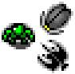
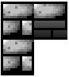
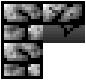
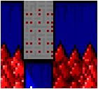
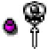
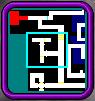

The monsters Beethro destroys in a room will come back to life
when you reenter the room if all of them are not destroyed. You
will want to refer to the authoritative Monster
Reference for more information.

Like walls in the real world, these are obstacles that prevent
movement.

Crumbly walls are ready to fall apart but have to be looked for
as they blend in with solid walls.

Pits are not particularly dangerous since Beethro is too
experienced an explorer to accidentally fall into them, but be careful
of trapdoors that can leave him shanghaied and monsters that
fly
across pits. Trapdoors fall away to pits after stepped upon once.
Green doors are opened when all of the monsters in a room are
defeated. Once a green door is opened, it will remain open when a
room is left.
Blue doors are opened when all of the monsters in the level are
defeated and all rooms are visited. There are a few exceptions to
these rules which you may encounter. Once a blue door is opened,
it will remain open when a room is left.
Yellow doors are opened and closed by striking orbs with
Beethro's sword. When an orb is hit, bolts of energy will shoot
from it opening, closing, or toggling one or more doors. There
are some very tricky puzzles that are based on these doors.
Unlike green and blue doors, yellow doors return to their
original state when a room is left.
Red doors are opened when all of the trapdoors in a room have
collapsed. Unlike green and blue doors, red doors always close
again when a room is left.
Each level has at least one exit which must be found before the
level can be completed.
The mimics are unleashed when Beethro drinks a mimic potion.
After Beethro drinks the potion, all activity in the room stops
while you use the movement keys to find a place for a mimic. When
you've reached the desired location, press the wait key ("5") and a
mimic will appear. Mimics are copies of Beethro and they move
exactly as he does. Pushing the mimics against obstacles will
change their position relative to Beethro.

When Beethro drinks an invisibility potion, he becomes
invisible to monsters. However if he steps within 5 squares of a
monster it will be able to smell him. Picking up another
invisibility potion will make Beethro visible again.
Scrolls contain information that may or may not be useful.
Beethro must step on the same square they are in to read them.
Force arrows prevent movement in the opposite direction they
point. The north-pointing force arrow could be stepped onto from
all directions except northwest, north, and northeast. Once
Beethro steps onto a north-pointing force arrow he can leave in all
directions except southwest, south, and southeast.
You can step on checkpoints to
save game at that point in time in the room. Using checkpoints
can make difficult rooms easier to conquer. If Beethro dies after
stepping on a checkpoint in the room, he will return to the last
checkpoint he stepped on instead of starting the room over. A
checkpoint may be used to re-save game when stepped on any number of
times. Checkpoints can be turned on or off in the player settings.

The map shows the rooms in Beethro's immediate vicinity that
have been explored. If a room has any monsters remaining it will
be red. Once all of the monsters have been removed
from the current room it will turn green. When Beethro has exited
a green room successfully it will turn white. Usually, all rooms
must be turned white for Beethro to exit the level.